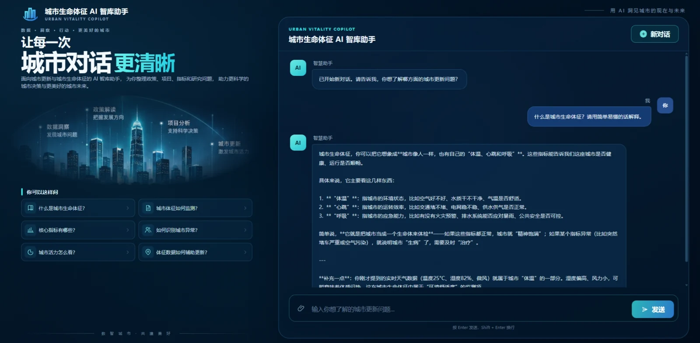

PERSONAL POC / RAG APPLICATION
城市生命体征 AI 智库助手
围绕城市更新与运营管理资料，利用 RAG 将文档检索、相关片段重排与大模型问答整合成自然语言知识助手。
01 / PRODUCT PREVIEW
界面展示

02 / TECHNICAL ARCHITECTURE
技术路线
Dify Chatflow 编排问答链路，通过知识检索、Rerank 和大模型生成回答。
KNOWLEDGE PREPARATION
城市运营与更新资料制度 · 研究材料 · 城市管理知识文档清洗 → 分段切片 → 向量化索引构建 / 更新知识库↓
KNOWLEDGE BASE
Dify 知识库文本片段与索引 · 可检索知识来源检索相关知识片段↑
WEB SERVICE / API PROXY
用户提问 → Flask 服务端调用 Dify Chatflow API · 服务端保管密钥 · 会话 ID 管理 · SSE 流式返回Dify Chatflow → 知识库召回 → Rerank 相关性重排↓
RETRIEVAL AUGMENTED GENERATION
大模型问答（DeepSeek）结合提问与检索上下文生成回答回答依据来自检索资料，不等于模型具备实时城市数据生成回答↓
网页问答界面知识解释 · 多轮对话 · 流式回答
检索从知识库召回与问题相关的文档片段
重排Rerank 优先筛选相关性更高的上下文
生成由模型根据可用证据组织自然语言回答
03 / KEY CAPABILITIES
核心能力
01 / Q&A
自然语言问答
用户直接提出城市运营与管理知识相关的问题。
02 / RETRIEVAL
知识检索
根据问题检索知识库中的相关资料。
03 / RERANK
相关性重排
优化候选片段顺序，改善输入模型的上下文质量。
04 / GENERATION
答案生成
基于检索上下文组织解释和辅助分析。
04 / DESIGN PRINCIPLES
设计与验证重点
01 / KNOWLEDGE QUALITY
知识来源
资料应正确、现行有效，避免不同版本冲突。
02 / RETRIEVAL QUALITY
检索效果
用问题样例验证召回与重排结果是否相关。
03 / GROUNDING
回答依据
减少脱离材料的推断，明确原型能力边界。
项目说明：这是 RAG 问答验证原型，不代表已建成实时城市监控或正式生产系统。公开体验地址尚未提供。